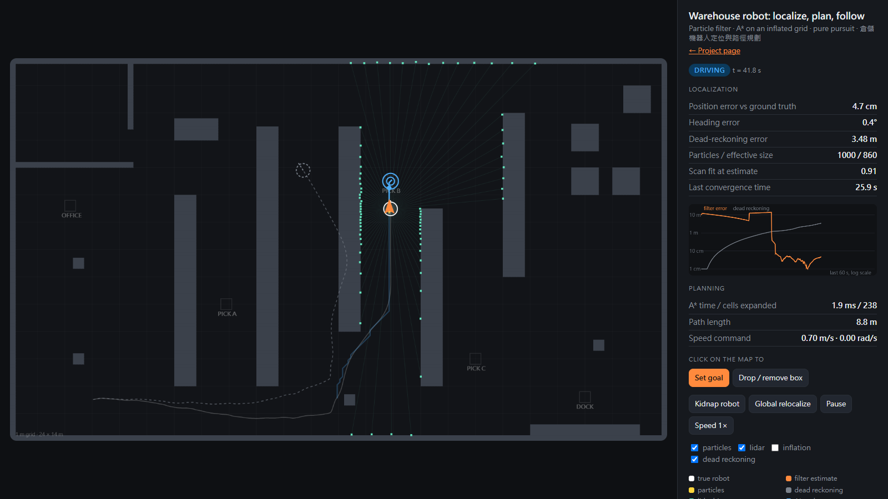

Try it · 線上操作
Click the map to set a goal or drop a box, then kidnap the robot. Everything runs in the browser; the white robot and the error numbers are the simulator's ground truth, shown for comparison.
Open the live simulator · 打開模擬器

28-second run · 28 秒示範
Recorded from the simulator's own canvas with scripted events: global localization, a box nobody mapped, a kidnap, recovery. 3× speed.
Results · 測試結果
From node test/bench.js (20 random seeds per row) and the unit tests in test/.
| Global localization, no initial guess | 17 of 20 runs converged (< 10 cm held for 1 s); median 19.6 s, 90th percentile 32.4 s |
|---|---|
| Tracking error while driving | mean 5.4 cm, 95th percentile 7.3 cm |
| Wheel odometry alone, same runs | median 8.8 m off after three deliveries (120 s), even when given the true start |
| Kidnapped robot | 14 of 20 recovered; noticed after a median 0.3 s, back under 10 cm after 9.5 s |
| A* vs Dijkstra | same optimal cost on all 291 solvable random maps and on all 10 station pairs; A* expands 30% of Dijkstra's cells on the warehouse, median 7.68 ms |
Global localization in a warehouse is hard on purpose: aisles look alike, so a few runs settle on a look-alike aisle until the scan stops fitting. Full numbers: results.json
How it works · 方法
| Robot and sensors | Differential drive, 0.42 m wheel base. Encoders carry 2% noise and a 1.5% right-wheel radius error, so odometry alone drifts. 72-beam 360° lidar, 15 m range, 2 cm noise, 2% dropouts. |
|---|---|
| Localization | Monte Carlo localization: odometry motion model, likelihood-field sensor model on a Euclidean distance transform of the map, low-variance resampling when the effective sample size drops below N/2. 5,000 particles while searching, 1,000 while tracking. The likelihood is widened while particles are spread out and narrowed as they agree (annealing). |
| Lost and found | Augmented MCL injects random particles when the short-term fit drops below the long-term fit. A scan-fit score at the estimate tells the robot it is lost. It then stops, clears what its lidar marked, and searches globally again. |
| Planning | A* on an 8-connected 10 cm grid, octile heuristic, no corner cutting, obstacles inflated by 0.35 m. Lidar returns that the prior map lacks go onto a costmap. Beams that pass through clear them, and the path is replanned when it is blocked. |
| Following | Pure pursuit with a 0.7 m look-ahead. Speed drops with curvature and near the goal; the robot turns in place when the target is behind it. |
| Code | Plain JavaScript modules in src/, no libraries. The same code runs the page, the tests and the film. |